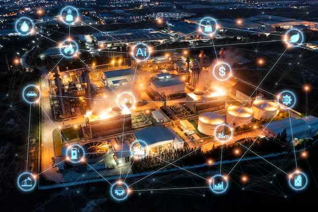

SHIFT-1459: Monitoramento Inteligente de Energia

AIoT Avançado
Sistema NILM com edge computing, processando dados em tempo real sem necessidade de sensores invasivos em cada equipamento.
Segurança e LGPD
Arquitetura federada que garante privacidade dos dados, conformidade regulatória e baixa latência operacional.
Redução Comprovada
Tecnologia de Wavelets e Transformers Federados alcança redução de 8-12% no consumo energético industrial.
K-AmazON K-ion TRL-7: Baterias Íon-Potássio

Tecnologia Nacional Validada
Desenvolvemos células 18650 íon-potássio com validação completa em ambiente operacional real, integrando BMS avançado, telemetria em tempo real e linha-piloto para produção escalável.
O projeto possui certificações internacionais UN38.3 e IEC 62133, garantindo segurança, confiabilidade e conformidade para aplicações industriais e comerciais de alto desempenho.
Sustentabilidade
Redução de dependência de lítio importado, fortalecendo cadeia produtiva nacional e minimizando impacto ambiental.
Performance
Alta densidade energética, ciclos de carga prolongados e estabilidade térmica superior para aplicações críticas.
Escalabilidade
Linha-piloto operacional pronta para expansão industrial e transferência tecnológica acelerada.
Sistema Robótico para Limpeza Fotovoltaica
IA Embarcada
Processamento local com sensores RGB-NIR para detecção inteligente de sujeira, otimização de rotas e tomada de decisão autônoma em tempo real.
Economia Hídrica
Redução de até 70% no consumo de água através de técnicas de limpeza adaptativa e uso eficiente de recursos naturais.
Produtividade
Incremento superior a 30% na geração por MWp instalado, maximizando retorno sobre investimento e eficiência operacional dos parques solares.
Integração com gêmeos digitais e telemetria avançada permite monitoramento remoto, manutenção preditiva e gestão inteligente de frotas robóticas em múltiplos sites simultaneamente.